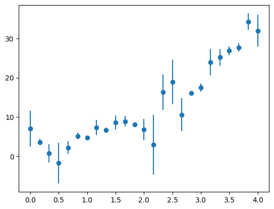

Nonlinear Fitting#
What about the case of fitting to a function where the fit parameters enter in a nonlinear fashion? For example:
One trick that is often used for something like this is to transform the data. So instead of fitting the data \((x_i, y_i)\), you instead fit \((x_i, \log y_i)\), and then our fitting function is:
which is linear.
However, when there are errors associated with the \(y_i\), the errors do not necessarily transform the correct way when you take the logarithm.
So let’s look at how we would fit directly to a nonlinear function.
We’ll minimize the same fitting function:
with fitting parameters \({\bf a} = (a_1, \ldots, a_M)^\intercal\).
Now we take the derivatives with respect to each parameter, \(a_k\):
Let’s define \(g_k \equiv {\partial \chi^2}/{\partial a_k}\), then we have
This is a nonlinear system of \(M\) equations and \(M\) unknowns. We can solve this using the same multivariate Newton’s method we looked at before:
Take an initial guess at the fit parameters, \({\bf a}^{(k)}\)
Solve the system \({\bf J}\delta {\bf a} = -{\bf g}\), where \(J_{ij} = \partial g_i/\partial a_j\) is the Jacobian
Correct the initial guess, \({\bf a}^{(k+1)} = {\bf a}^{(k)} + \delta {\bf a}\)
As we’ve seen with Newton’s method, convergence will be very sensitive to the initial guess.
Fitting an exponential#
Let’s try this out on data that is constructed to follow an exponential trend.
First let’s construct the data, and perturb it with some errors. We’ll take the form:
import numpy as np
import matplotlib.pyplot as plt
# make up some experimental data
a0 = 2.5
a1 = 2./3.
sigma = 4.0
N = 25
x = np.linspace(0.0, 4.0, N)
r = sigma * np.random.randn(N)
y = a0 * np.exp(a1 * x) + r
yerr = np.abs(r)
fig, ax = plt.subplots()
ax.errorbar(x, y, yerr=yerr, fmt="o")
<ErrorbarContainer object of 3 artists>

Now, let’s compute our vector \({\bf g}\) that we will zero:
We can divide out the \(-2\) in each expression. We’ll keep the overall \(a_0\) in the expression, to deal with the case where it might be \(0\).
Let’s write a function to compute this:
def g(x, y, yerr, a):
"""compute the nonlinear functions we minimize. Here a is the vector
of fit parameters"""
a0, a1 = a
g0 = np.sum(np.exp(a1 * x) * (y - a0 * np.exp(a1 * x)) / yerr**2)
g1 = a0 * np.sum(x * np.exp(a1 * x) * (y - a0 * np.exp(a1 * x)) / yerr**2)
return np.array([g0, g1])
We also need the Jacobian. We could either compute this numerically, via differencing, or analytically. We’ll do the latter.
Notice that the Jacobian is symmetric:
This is called the Hessian matrix.
Let’s write this function:
def jac(x, y, yerr, a):
""" compute the Jacobian of the function g"""
a0, a1 = a
dg0da0 = -np.sum(np.exp(2.0 * a1 * x) / yerr**2)
dg0da1 = np.sum(x * np.exp(a1 * x) * (y - 2.0 * a0 * np.exp(a1 * x)) / yerr**2)
dg1da0 = dg0da1
dg1da1 = np.sum(a0 * x**2 * np.exp(a1 * x) * (y - 2.0 * a0 * np.exp(a1 * x)) / yerr**2)
return np.array([[dg0da0, dg0da1],
[dg1da0, dg1da1]])
def fit(aguess, x, y, yerr, tol=1.e-5):
""" aguess is the initial guess to our fit parameters. x and y
are the vector of points that we are fitting to, and yerr are
the errors in y"""
avec = aguess.copy()
err = 1.e100
while err > tol:
# get the jacobian
J = jac(x, y, yerr, avec)
print("condition number of J: ", np.linalg.cond(J))
# get the current function values
gv = g(x, y, yerr, avec)
# solve for the correction: J da = -g
da = np.linalg.solve(J, -gv)
avec += da
err = np.max(np.abs(da))
return avec
# initial guesses
aguess = np.array([2.0, 1.0])
# fit
afit = fit(aguess, x, y, yerr)
condition number of J: 148.90211769148755
condition number of J: 246.5710189081322
condition number of J: 3362.246355078368
condition number of J: 72.27828287616136
condition number of J: 71.79094613879293
condition number of J: 71.58812445206055
condition number of J: 72.28445109511279
condition number of J: 74.10661654162502
condition number of J: 73.43399209450607
condition number of J: 64.96527996748785
condition number of J: 56.08745942386445
condition number of J: 52.183413133495826
condition number of J: 55.49744892164047
condition number of J: 76.08251614442402
condition number of J: 215.11794974486781
condition number of J: 652.9524443570467
condition number of J: 4.557348211246642
condition number of J: 203.90669332059002
condition number of J: 555.4264010355366
condition number of J: 1510.981067614676
condition number of J: 4108.453499882672
condition number of J: 11169.117639741196
condition number of J: 30361.99341441968
condition number of J: 82533.6391432938
condition number of J: 224350.87578996134
condition number of J: 609850.0931660563
condition number of J: 1657745.6106583588
condition number of J: 4506220.9539864
condition number of J: 12249179.718570504
condition number of J: 33296723.826847788
condition number of J: 90509880.5100685
condition number of J: 246031364.67084754
condition number of J: 668782589.0000747
condition number of J: 1817939560.053024
condition number of J: 4941672072.513297
condition number of J: 13432857398.100758
condition number of J: 36514292170.72326
condition number of J: 99256136887.90585
condition number of J: 269806153266.6224
condition number of J: 733409163632.2793
condition number of J: 1993612802328.1484
condition number of J: 5419201453553.126
condition number of J: 14730916835953.453
condition number of J: 40042783551714.62
condition number of J: 108847570889545.55
condition number of J: 295878374020960.4
condition number of J: 804280807535186.4
condition number of J: 2186261904101264.8
condition number of J: 5942876006170740.0
condition number of J: 1.6154411856359188e+16
condition number of J: 4.3912244198584536e+16
condition number of J: 1.1936585545186846e+17
condition number of J: 3.244700358132831e+17
condition number of J: 8.820010022307031e+17
condition number of J: 2.397527297046386e+18
condition number of J: 6.517154884795723e+18
condition number of J: 1.7715463696593314e+19
condition number of J: 4.815562304917551e+19
condition number of J: 1.3090055507269737e+20
condition number of J: 3.5582460018931565e+20
condition number of J: 9.672315448133218e+20
condition number of J: 2.629207932178424e+21
condition number of J: 7.14692814528099e+21
condition number of J: 1.9427364906619825e+22
condition number of J: 5.280905300050763e+22
condition number of J: 1.435498891494105e+23
condition number of J: 3.9020905515215286e+23
condition number of J: 1.0606981839202704e+24
condition number of J: 2.883276598829981e+24
condition number of J: 7.837558385020738e+24
condition number of J: 2.1304692537488696e+25
condition number of J: 5.791215858556254e+25
condition number of J: 1.5742156832997317e+26
condition number of J: 4.2791618859889e+26
condition number of J: 1.1631967995718163e+27
condition number of J: 3.161896723197786e+27
condition number of J: 8.594926406132742e+27
condition number of J: 2.3363432266733437e+28
condition number of J: 6.350839338109523e+28
condition number of J: 1.7263371168245986e+29
condition number of J: 4.692670814458687e+29
condition number of J: 1.2756001801883154e+30
condition number of J: 3.4674407901849816e+30
condition number of J: 9.425481291217508e+30
condition number of J: 2.562111451839725e+31
condition number of J: 6.964541002022747e+31
condition number of J: 1.8931585249356385e+32
condition number of J: 5.146138416724877e+32
condition number of J: 1.398865454491823e+33
condition number of J: 3.802510545404227e+33
condition number of J: 1.0336295318096204e+34
condition number of J: 2.8096963736767214e+34
condition number of J: 7.637546596052707e+34
condition number of J: 2.0761004126059313e+35
condition number of J: 5.643426025643029e+35
condition number of J: 1.5340422415758292e+36
condition number of J: 4.169959149364158e+36
condition number of J: 1.1335124181133127e+37
condition number of J: 3.08120620849009e+37
condition number of J: 8.375586846273805e+37
condition number of J: 2.2767205526906686e+38
condition number of J: 6.188768106858278e+38
condition number of J: 1.6822815885419743e+39
condition number of J: 4.5729154724848655e+39
condition number of J: 1.2430473031934818e+40
condition number of J: 3.3789528961858627e+40
condition number of J: 9.184946256921093e+40
condition number of J: 2.496727250556153e+41
condition number of J: 6.786808315805305e+41
condition number of J: 1.8448457718088296e+42
condition number of J: 5.0148107378174456e+42
condition number of J: 1.3631668901770459e+43
condition number of J: 3.70547178672529e+43
condition number of J: 1.007251662372303e+44
condition number of J: 2.737993890511796e+44
condition number of J: 7.442639039010098e+44
condition number of J: 2.0231190455521044e+45
condition number of J: 5.499407738333693e+45
condition number of J: 1.4948940122399537e+46
condition number of J: 4.063543228944098e+46
condition number of J: 1.104585571839654e+47
condition number of J: 3.002574887909774e+47
condition number of J: 8.161844756392594e+47
condition number of J: 2.218619428800573e+48
condition number of J: 6.030832877574785e+48
condition number of J: 1.639350342158491e+49
condition number of J: 4.4562162455675445e+49
condition number of J: 1.2113251644010245e+50
condition number of J: 3.292723182746471e+50
condition number of J: 8.950549593805564e+50
condition number of J: 2.433011631556315e+51
condition number of J: 6.613611306489026e+51
condition number of J: 1.7977659434920403e+52
condition number of J: 4.886834496016943e+52
condition number of J: 1.3283793409209674e+53
condition number of J: 3.610909423725869e+53
condition number of J: 9.815469470725553e+53
condition number of J: 2.6681212300067787e+54
condition number of J: 7.252705455653223e+54
condition number of J: 1.971489744726794e+55
condition number of J: 5.359064748084206e+55
condition number of J: 1.4567448322252748e+56
condition number of J: 3.959843006139585e+56
condition number of J: 1.0763969287139872e+57
condition number of J: 2.9259502115323577e+57
condition number of J: 7.953557290984308e+57
condition number of J: 2.1620010255690596e+58
condition number of J: 5.876928100914195e+58
condition number of J: 1.597514686387538e+59
condition number of J: 4.342495142703696e+59
condition number of J: 1.1804125636583124e+60
condition number of J: 3.2086940218771466e+60
condition number of J: 8.722134652753817e+60
condition number of J: 2.3709220131953643e+61
condition number of J: 6.444834225162497e+61
condition number of J: 1.7518875761690145e+62
condition number of J: 4.762124163803392e+62
condition number of J: 1.2944795579332488e+63
condition number of J: 3.518760259641648e+63
condition number of J: 9.564982072487727e+63
condition number of J: 2.6000316957179923e+64
condition number of J: 7.067618911887776e+64
condition number of J: 1.921178005865803e+65
condition number of J: 5.222303262580198e+65
condition number of J: 1.4195692061374134e+66
condition number of J: 3.858789177283364e+66
condition number of J: 1.0489276500463798e+67
condition number of J: 2.851280970489323e+67
condition number of J: 7.750585249912198e+67
condition number of J: 2.1068275044759034e+68
condition number of J: 5.726950921114565e+68
condition number of J: 1.5567466621342516e+69
condition number of J: 4.231676163193809e+69
condition number of J: 1.1502888418333024e+70
condition number of J: 3.126809256234667e+70
condition number of J: 8.499548782280237e+70
condition number of J: 2.3104169004973577e+71
condition number of J: 6.280364276786636e+71
condition number of J: 1.7071800089692446e+72
condition number of J: 4.640596396289648e+72
condition number of J: 1.2614448857246322e+73
condition number of J: 3.428962710467865e+73
condition number of J: 9.320887026328471e+73
condition number of J: 2.5336797828788345e+74
condition number of J: 6.887255712933595e+74
condition number of J: 1.8721502052418143e+75
condition number of J: 5.0890318830546955e+75
condition number of J: 1.3833422892156294e+76
condition number of J: 3.7603142073137823e+76
condition number of J: 1.0221593779037432e+77
condition number of J: 2.778517262744748e+77
condition number of J: 7.552792985378815e+77
condition number of J: 2.0530619926268176e+78
condition number of J: 5.580801107257397e+78
condition number of J: 1.5170190238101897e+79
condition number of J: 4.123685245849919e+79
condition number of J: 1.1209338670078506e+80
condition number of J: 3.047014161591769e+80
condition number of J: 8.282643226512277e+80
condition number of J: 2.2514558574237714e+81
condition number of J: 6.120091544812718e+81
condition number of J: 1.6636133634770257e+82
condition number of J: 4.5221699755212314e+82
condition number of J: 1.2292532469662448e+83
condition number of J: 3.341456763802622e+83
condition number of J: 9.083021201626237e+83
condition number of J: 2.469021147988884e+84
condition number of J: 6.711495320659275e+84
condition number of J: 1.824373577193602e+85
condition number of J: 4.9591615432061934e+85
condition number of J: 1.3480398707290313e+86
condition number of J: 3.6643522846410055e+86
condition number of J: 9.960742228412034e+86
condition number of J: 2.707610459745709e+87
condition number of J: 7.3600483112724e+87
condition number of J: 2.000668558111245e+88
condition number of J: 5.4383809862831566e+88
condition number of J: 1.4783052211250687e+89
condition number of J: 4.0184502195004046e+89
condition number of J: 1.0923280210235212e+90
condition number of J: 2.969255410264867e+90
condition number of J: 8.071273025776696e+90
condition number of J: 2.1939994798500445e+91
condition number of J: 5.963908917724974e+91
condition number of J: 1.621158523763665e+92
condition number of J: 4.406765756198261e+92
condition number of J: 1.1978831277349316e+93
condition number of J: 3.2561839387395503e+93
condition number of J: 8.851225630795922e+93
condition number of J: 2.4060125791783498e+94
condition number of J: 6.540220273024389e+94
condition number of J: 1.7778161922281653e+95
condition number of J: 4.8326054496740737e+95
condition number of J: 1.313638357796119e+96
condition number of J: 3.570839277163971e+96
condition number of J: 9.706547519462655e+96
condition number of J: 2.6385131739229554e+97
condition number of J: 7.17222241482457e+97
condition number of J: 1.9496121859884284e+98
condition number of J: 5.299595377714661e+98
condition number of J: 1.4405793813427314e+99
condition number of J: 3.91590075475672e+99
condition number of J: 1.0644521863704252e+100
condition number of J: 2.893481035474228e+100
condition number of J: 7.865296919720455e+100
condition number of J: 2.1380093692311016e+101
condition number of J: 5.81171201745609e+101
condition number of J: 1.5797871169287946e+102
condition number of J: 4.2943066127812463e+102
condition number of J: 1.1673135631354776e+103
condition number of J: 3.173087246784949e+103
condition number of J: 8.62534540305067e+103
condition number of J: 2.3446119673295398e+104
condition number of J: 6.373316105579499e+104
condition number of J: 1.7324469356822125e+105
condition number of J: 4.709279024034514e+105
condition number of J: 1.2801147596176366e+106
condition number of J: 3.479712689410841e+106
condition number of J: 9.458839771883844e+106
condition number of J: 2.571179227021755e+107
condition number of J: 6.98918977052461e+107
condition number of J: 1.8998587548868891e+108
condition number of J: 5.164351530047859e+108
condition number of J: 1.4038162919903758e+109
condition number of J: 3.815968317012196e+109
condition number of J: 1.0372877334109404e+110
condition number of J: 2.81964039661443e+110
condition number of J: 7.66457725290606e+110
condition number of J: 2.083448106939509e+111
condition number of J: 5.663399129631065e+111
condition number of J: 1.5394714941386898e+112
condition number of J: 4.184717387947896e+112
condition number of J: 1.1375241232895367e+113
condition number of J: 3.092111153771754e+113
condition number of J: 8.405229560873291e+113
condition number of J: 2.2847782779348667e+114
condition number of J: 6.210671274968296e+114
condition number of J: 1.6882354869278894e+115
condition number of J: 4.58909984627579e+115
condition number of J: 1.2474466721115677e+116
condition number of J: 3.390911620772584e+116
condition number of J: 9.217453440656723e+116
condition number of J: 2.5055636192404475e+117
condition number of J: 6.810828056229386e+117
condition number of J: 1.8513750142007382e+118
condition number of J: 5.032559058764973e+118
condition number of J: 1.3679913840087783e+119
condition number of J: 3.718586120639601e+119
condition number of J: 1.0108165079294646e+120
condition number of J: 2.747684145411092e+120
condition number of J: 7.468979882815991e+120
condition number of J: 2.030279229258488e+121
condition number of J: 5.518871135591183e+121
condition number of J: 1.5001847121484652e+122
condition number of J: 4.077924842365237e+122
condition number of J: 1.1084948996823137e+123
condition number of J: 3.0132015427459657e+123
condition number of J: 8.190730999131119e+123
condition number of J: 2.226471523673432e+124
condition number of J: 6.052177084383014e+124
condition number of J: 1.6451522991094592e+125
condition number of J: 4.471987599716862e+125
condition number of J: 1.215612262940453e+126
condition number of J: 3.304376724803012e+126
condition number of J: 8.982227205415045e+126
condition number of J: 2.441622499157019e+127
condition number of J: 6.637018071415283e+127
condition number of J: 1.8041285618682464e+128
condition number of J: 4.904129885930405e+128
condition number of J: 1.3330807153327549e+129
condition number of J: 3.623689084358213e+129
condition number of J: 9.850208189996326e+129
condition number of J: 2.6775641929405474e+130
condition number of J: 7.2783740902029e+130
condition number of J: 1.978467203012568e+131
condition number of J: 5.3780314461512565e+131
condition number of J: 1.4619005152954276e+132
condition number of J: 3.9738576057424763e+132
condition number of J: 1.0802064918573543e+133
condition number of J: 2.936305677799339e+133
condition number of J: 7.981706366763064e+133
condition number of J: 2.1696527376867904e+134
condition number of J: 5.897727610920423e+134
condition number of J: 1.6031685793966163e+135
condition number of J: 4.357864017330325e+135
condition number of J: 1.1845902569204553e+136
condition number of J: 3.2200501695565056e+136
condition number of J: 8.753003862631917e+136
condition number of J: 2.379313134422417e+137
condition number of J: 6.467643657514391e+137
condition number of J: 1.7580878227169762e+138
condition number of J: 4.778978181326685e+138
condition number of J: 1.299060954890258e+139
condition number of J: 3.531213787738844e+139
condition number of J: 9.598834271614537e+139
condition number of J: 2.6092336774919708e+140
condition number of J: 7.092632491729795e+140
condition number of J: 1.9279774018207296e+141
condition number of J: 5.240785937048973e+141
condition number of J: 1.4245933179523932e+142
condition number of J: 3.87244612913417e+142
condition number of J: 1.0526399944511981e+143
condition number of J: 2.8613721688259226e+143
condition number of J: 7.778015970977953e+143
condition number of J: 2.1142839475373604e+144
condition number of J: 5.7472196347934635e+144
condition number of J: 1.5622562697422105e+145
condition number of J: 4.246652829436463e+145
condition number of J: 1.1543599218031327e+146
condition number of J: 3.1378755989388598e+146
condition number of J: 8.529630220560546e+146
condition number of J: 2.318593883202485e+147
condition number of J: 6.30259162028561e+147
condition number of J: 1.713222027362062e+148
condition number of J: 4.6570203050940584e+148
condition number of J: 1.2659093670101976e+149
condition number of J: 3.441098428819913e+149
condition number of J: 9.353875329000142e+149
condition number of J: 2.5426469332492464e+150
condition number of J: 6.911630954838544e+150
condition number of J: 1.8787760829552657e+151
condition number of J: 5.107042886040761e+151
condition number of J: 1.388238187428564e+152
condition number of J: 3.7736226384599875e+152
condition number of J: 1.0257769845587463e+153
condition number of J: 2.7883509371775547e+153
condition number of J: 7.579523683896495e+153
condition number of J: 2.060328149831081e+154
condition number of J: 5.600552570348471e+154
condition number of J: 1.5223880281307847e+155
condition number of J: 4.13827971273151e+155
condition number of J: 1.124901054419878e+156
condition number of J: 3.0577980950439743e+156
condition number of J: 8.311956996854721e+156
condition number of J: 2.2594241663483202e+157
condition number of J: 6.141751654165866e+157
condition number of J: 1.6695011916427353e+158
condition number of J: 4.538174751833171e+158
condition number of J: 1.2336037962279745e+159
condition number of J: 3.3532827828045975e+159
condition number of J: 9.115167654182316e+159
condition number of J: 2.4777594597721454e+160
condition number of J: 6.735248514791123e+160
condition number of J: 1.8308303647912485e+161
condition number of J: 4.976712911603096e+161
condition number of J: 1.35281082730682e+162
condition number of J: 3.677321089210776e+162
condition number of J: 9.99599509421088e+162
condition number of J: 2.7171931821959193e+163
condition number of J: 7.386096851575974e+163
condition number of J: 2.0077492854877538e+164
condition number of J: 5.457628398842992e+164
condition number of J: 1.4835372103056942e+165
condition number of J: 4.0326722406167935e+165
condition number of J: 1.0961939671799852e+166
condition number of J: 2.9797641414517844e+166
condition number of J: 8.099838718802256e+166
condition number of J: 2.2017644402769164e+167
condition number of J: 5.985016268552042e+167
condition number of J: 1.6268960965836779e+168
condition number of J: 4.422362096134363e+168
condition number of J: 1.2021226524788095e+169
condition number of J: 3.2677081618121353e+169
condition number of J: 8.882551716961236e+169
condition number of J: 2.4145278922563423e+170
condition number of J: 6.563367293827934e+170
condition number of J: 1.7841082048314894e+171
condition number of J: 4.849708913198127e+171
condition number of J: 1.3182875612062329e+172
condition number of J: 3.5834771223104946e+172
condition number of J: 9.740900744275328e+172
condition number of J: 2.6478513485986816e+173
condition number of J: 7.197606205356574e+173
condition number of J: 1.9565122156424836e+174
condition number of J: 5.318351602939108e+174
condition number of J: 1.4456778519625413e+175
condition number of J: 3.929759834795481e+175
condition number of J: 1.0682194749132776e+176
condition number of J: 2.9037215874628254e+176
condition number of J: 7.893133626104451e+176
condition number of J: 2.145576170543878e+177
condition number of J: 5.832280715964169e+177
condition number of J: 1.5853782688677512e+178
condition number of J: 4.3095049394970665e+178
condition number of J: 1.1714448966689373e+179
condition number of J: 3.184317375656256e+179
condition number of J: 8.655872058292795e+179
condition number of J: 2.3529099725523703e+180
condition number of J: 6.395872422389179e+180
condition number of J: 1.7385783782922838e+181
condition number of J: 4.725946013063711e+181
condition number of J: 1.2846453169589559e+182
condition number of J: 3.49202802110454e+182
condition number of J: 9.492316314238272e+182
condition number of J: 2.580279094697923e+183
condition number of J: 7.013925775470121e+183
condition number of J: 1.906582698162095e+184
condition number of J: 5.1826291028684385e+184
condition number of J: 1.408784651397028e+185
condition number of J: 3.8294737181045526e+185
condition number of J: 1.0409588820485101e+186
condition number of J: 2.8296196132455075e+186
condition number of J: 7.691703576136576e+186
condition number of J: 2.0908218060905508e+187
condition number of J: 5.683442922041866e+187
condition number of J: 1.5449199618070582e+188
condition number of J: 4.199527858603768e+188
condition number of J: 1.141550026615015e+189
condition number of J: 3.1030546936245344e+189
condition number of J: 8.434977186394123e+189
condition number of J: 2.2928645209241747e+190
condition number of J: 6.232651962346638e+190
condition number of J: 1.6942104572356475e+191
condition number of J: 4.605341499488951e+191
condition number of J: 1.251861611190915e+192
condition number of J: 3.4029126694457264e+192
condition number of J: 9.25007567318738e+192
condition number of J: 2.5144312614296325e+193
condition number of J: 6.8349328068535244e+193
condition number of J: 1.8579273647608515e+194
condition number of J: 5.0503701942262223e+194
condition number of J: 1.372832952595632e+195
condition number of J: 3.7317468685504845e+195
condition number of J: 1.0143939701189728e+196
condition number of J: 2.7574086958728304e+196
condition number of J: 7.49541395162607e+196
condition number of J: 2.037464754148355e+197
condition number of J: 5.5384034173272505e+197
condition number of J: 1.5054941367996143e+198
condition number of J: 4.092357354914027e+198
condition number of J: 1.1124180633423524e+199
condition number of J: 3.02386580723312e+199
condition number of J: 8.21971947550043e+199
condition number of J: 2.234351408528374e+200
condition number of J: 6.073596832194551e+200
condition number of J: 1.650974790234087e+201
condition number of J: 4.4878147715373023e+201
condition number of J: 1.2199145342959932e+202
condition number of J: 3.3160715108498762e+202
condition number of J: 9.01401692981395e+202
condition number of J: 2.4502638421735458e+203
condition number of J: 6.660507677110592e+203
condition number of J: 1.8105136987001688e+204
condition number of J: 4.921486487352842e+204
condition number of J: 1.337798728757797e+205
condition number of J: 3.636513974517931e+205
condition number of J: 9.885069855869472e+205
condition number of J: 2.6870405762258254e+206
condition number of J: 7.304133570686784e+206
condition number of J: 1.9854693557835563e+207
condition number of J: 5.397065270788729e+207
condition number of J: 1.4670744452592398e+208
condition number of J: 3.987921805544826e+208
condition number of J: 1.0840295377328084e+209
condition number of J: 2.9466977939319526e+209
condition number of J: 8.009955067205583e+209
condition number of J: 2.177331530595839e+210
condition number of J: 5.918600734149587e+210
condition number of J: 1.608842482554319e+211
condition number of J: 4.373287285180344e+211
condition number of J: 1.1887827357936719e+212
condition number of J: 3.2314465086937684e+212
condition number of J: 8.783982324219696e+212
condition number of J: 2.3877339533431843e+213
condition number of J: 6.490533816567455e+213
condition number of J: 1.7643100130574252e+214
condition number of J: 4.795891848262339e+214
condition number of J: 1.3036585662386382e+215
condition number of J: 3.5437113911214635e+215
condition number of J: 9.632806279788796e+215
condition number of J: 2.6184682267416063e+216
condition number of J: 7.117734599149088e+216
condition number of J: 1.9348008620661194e+217
condition number of J: 5.259334025041227e+217
condition number of J: 1.4296352110065937e+218
condition number of J: 3.8861514154044365e+218
condition number of J: 1.0563654775134277e+219
condition number of J: 2.871499081736213e+219
condition number of J: 7.805543774320382e+219
condition number of J: 2.121766780297673e+220
condition number of J: 5.767560083111219e+220
condition number of J: 1.5677853768466964e+221
condition number of J: 4.261682500806192e+221
condition number of J: 1.1584454100603373e+222
condition number of J: 3.1489811074288015e+222
condition number of J: 8.559818122484552e+222
condition number of J: 2.3267998057264177e+223
condition number of J: 6.324897630368159e+223
condition number of J: 1.7192854295493442e+224
condition number of J: 4.673502341078387e+224
condition number of J: 1.2703896489014185e+225
condition number of J: 3.453277097671192e+225
condition number of J: 9.386980383233394e+225
condition number of J: 2.5516458199844855e+226
condition number of J: 6.936092465127309e+226
condition number of J: 1.8854254108467264e+227
condition number of J: 5.125117633219587e+227
condition number of J: 1.3931514131095832e+228
condition number of J: 3.78697817054782e+228
condition number of J: 1.0294073945771219e+229
condition number of J: 2.7982194147603605e+229
condition number of J: 7.606348987184394e+229
condition number of J: 2.0676200232781196e+230
condition number of J: 5.620373937434981e+230
condition number of J: 1.5277760343274326e+231
condition number of J: 4.152925832067482e+231
condition number of J: 1.1288822824247197e+232
condition number of J: 3.0686201947844876e+232
condition number of J: 8.341374513925129e+232
condition number of J: 2.267420676557407e+233
condition number of J: 6.163488422558316e+233
condition number of J: 1.6754098578957974e+234
condition number of J: 4.554236171939298e+234
condition number of J: 1.2379697428693477e+235
condition number of J: 3.365150656223864e+235
condition number of J: 9.147427878840362e+235
condition number of J: 2.4865286980191427e+236
condition number of J: 6.759085775767363e+236
condition number of J: 1.837310004126443e+237
condition number of J: 4.994326397462924e+237
condition number of J: 1.3575986691616797e+238
condition number of J: 3.6903357927223765e+238
condition number of J: 1.0031372726269242e+239
condition number of J: 2.7268098196317354e+239
condition number of J: 7.412237582368632e+239
condition number of J: 2.014855072837386e+240
condition number of J: 5.4769439314723926e+240
condition number of J: 1.4887877164410446e+241
condition number of J: 4.046944596034729e+241
condition number of J: 1.1000735956181734e+242
condition number of J: 2.990310064936485e+242
condition number of J: 8.128505510975035e+242
condition number of J: 2.2095568823012645e+243
condition number of J: 6.0061983221061486e+243
condition number of J: 1.6326539757102352e+244
condition number of J: 4.4380136343345476e+244
condition number of J: 1.2063771816665088e+245
condition number of J: 3.279273171191706e+245
condition number of J: 8.913988671803687e+245
condition number of J: 2.4230733425653733e+246
condition number of J: 6.586596236118975e+246
condition number of J: 1.7904224860038952e+247
condition number of J: 4.8668729089688567e+247
condition number of J: 1.3229532189869657e+248
condition number of J: 3.5961596950736687e+248
condition number of J: 9.775375551355574e+248
condition number of J: 2.6572225727612677e+249
condition number of J: 7.223079833708148e+249
condition number of J: 1.963436665747784e+250
condition number of J: 5.337174209832417e+250
condition number of J: 1.4507943669907724e+251
condition number of J: 3.94366796462176e+251
condition number of J: 1.07200009657074e+252
condition number of J: 2.913998382614584e+252
condition number of J: 7.921068851620272e+252
condition number of J: 2.1531697521332345e+253
condition number of J: 5.852922210811437e+253
condition number of J: 1.5909892089033073e+254
condition number of J: 4.3247570558362906e+254
condition number of J: 1.1755908517379831e+255
condition number of J: 3.1955872499820515e+255
condition number of J: 8.686506752881621e+255
condition number of J: 2.36123734591449e+256
condition number of J: 6.418508570078224e+256
condition number of J: 1.7447315211852283e+257
condition number of J: 4.7426719895775137e+257
condition number of J: 1.2891919087610264e+258
condition number of J: 3.504386938981529e+258
condition number of J: 9.525911336122709e+258
condition number of J: 2.5894111684494374e+259
condition number of J: 7.038749325605012e+259
condition number of J: 1.9133304386870463e+260
condition number of J: 5.200971363320571e+260
condition number of J: 1.4137705947250174e+261
condition number of J: 3.843026917250753e+261
condition number of J: 1.0446430235441702e+262
condition number of J: 2.839634148126633e+262
condition number of J: 7.718925904324407e+262
condition number of J: 2.0982216020946836e+263
condition number of J: 5.703557653054204e+263
condition number of J: 1.5503877125865765e+264
condition number of J: 4.214390746190275e+264
condition number of J: 1.1455901783394981e+265
condition number of J: 3.1140369646414148e+265
condition number of J: 8.46483009413452e+265
condition number of J: 2.3009793825879134e+266
condition number of J: 6.254710443347638e+266
condition number of J: 1.7002065740424902e+267
condition number of J: 4.62164063484631e+267
condition number of J: 1.2562921755370647e+268
condition number of J: 3.414956191997684e+268
condition number of J: 9.282813361691006e+268
condition number of J: 2.5233302878061482e+269
condition number of J: 6.859122868543786e+269
condition number of J: 1.864502905273045e+270
condition number of J: 5.068244366512814e+270
condition number of J: 1.3776916563681713e+271
condition number of J: 3.7449541947252425e+271
condition number of J: 1.0179840935933103e+272
condition number of J: 2.7671676632750475e+272
condition number of J: 7.52194157538004e+272
condition number of J: 2.0446757099086165e+273
condition number of J: 5.558004827336191e+273
condition number of J: 1.510822352463562e+274
condition number of J: 4.1068409467314475e+274
condition number of J: 1.1163551117871635e+275
condition number of J: 3.0345678144784124e+275
condition number of J: 8.248810547323348e+275
condition number of J: 2.2422591817190374e+276
condition number of J: 6.095092388362307e+276
condition number of J: 1.6568178882064298e+277
condition number of J: 4.503697958577429e+277
condition number of J: 1.2242320321669124e+278
condition number of J: 3.327807686856807e+278
condition number of J: 9.045919163789186e+278
condition number of J: 2.458935768463758e+279
condition number of J: 6.684080416763013e+279
condition number of J: 1.816921433684586e+280
condition number of J: 4.938904516922567e+280
condition number of J: 1.3425334400844911e+281
condition number of J: 3.649384254280283e+281
condition number of J: 9.920054903474657e+281
condition number of J: 2.6965504981431206e+282
condition number of J: 7.329984218624631e+282
condition number of J: 1.992496290437891e+283
condition number of J: 5.416166459569375e+283
condition number of J: 1.4722666866956794e+284
condition number of J: 4.002035781090472e+284
condition number of J: 1.087866114058113e+285
condition number of J: 2.957126689640524e+285
condition number of J: 8.038303744901088e+285
condition number of J: 2.1850375001398915e+286
condition number of J: 5.939547731131846e+286
condition number of J: 1.614536466680085e+287
condition number of J: 4.388765138760948e+287
condition number of J: 1.1929900526068424e+288
condition number of J: 3.24288318153358e+288
condition number of J: 8.815070424178186e+288
condition number of J: 2.396184575063033e+289
condition number of J: 6.513504988027702e+289
condition number of J: 1.7705542248533052e+290
condition number of J: 4.81286537572013e+290
condition number of J: 1.3082724493639743e+291
condition number of J: 3.556253225779698e+291
condition number of J: 9.666898521035817e+291
condition number of J: 2.627735458728928e+292
condition number of J: 7.142925547460337e+292
condition number of J: 1.9416484717697316e+293
condition number of J: 5.2779477580669364e+293
condition number of J: 1.4346949482309511e+294
condition number of J: 3.8999052071581847e+294
condition number of J: 1.0601041457330902e+295
condition number of J: 2.8816618356203582e+295
condition number of J: 7.833169003530756e+295
condition number of J: 2.1292760961546308e+296
condition number of J: 5.7879725199493456e+296
condition number of J: 1.5733340524598616e+297
condition number of J: 4.276765364897473e+297
condition number of J: 1.1625453575983816e+298
condition number of J: 3.1601259203191036e+298
condition number of J: 8.590112864845836e+298
condition number of J: 2.335034770492271e+299
condition number of J: 6.347282585449177e+299
condition number of J: 1.7253702912121047e+300
condition number of J: 4.6900427099649543e+300
condition number of J: 1.2748857873194553e+301
condition number of J: 3.465498869031178e+301
condition number of J: 9.420202602232825e+301
condition number of J: 2.5606765554052097e+302
condition number of J: 6.960640549119083e+302
condition number of J: 1.8920982719105596e+303
condition number of J: 5.143256350193236e+303
condition number of J: 1.398082027583686e+304
condition number of J: 3.8003809702759126e+304
condition number of J: 1.0330506532722569e+305
condition number of J: 2.808122818667721e+305
condition number of J: 7.633269230065661e+305
condition number of J: 2.074937703982306e+306
condition number of J: 5.640265455919627e+306
condition number of J: 1.5331831096511593e+307
condition number of J: 4.1676237866650823e+307
condition number of J: 1.1328776007145588e+308
condition number of J: inf
condition number of J: inf
condition number of J: inf
condition number of J: inf
condition number of J: inf
condition number of J: inf
condition number of J: inf
condition number of J: inf
condition number of J: inf
condition number of J: inf
condition number of J: inf
condition number of J: inf
condition number of J: inf
condition number of J: inf
condition number of J: inf
condition number of J: inf
condition number of J: inf
condition number of J: inf
condition number of J: inf
condition number of J: inf
condition number of J: inf
condition number of J: inf
condition number of J: inf
condition number of J: inf
condition number of J: inf
condition number of J: inf
condition number of J: inf
condition number of J: inf
condition number of J: inf
condition number of J: inf
condition number of J: inf
---------------------------------------------------------------------------
LinAlgError Traceback (most recent call last)
Cell In[6], line 5
2 aguess = np.array([2.0, 1.0])
4 # fit
----> 5 afit = fit(aguess, x, y, yerr)
Cell In[5], line 20, in fit(aguess, x, y, yerr, tol)
17 gv = g(x, y, yerr, avec)
19 # solve for the correction: J da = -g
---> 20 da = np.linalg.solve(J, -gv)
22 avec += da
23 err = np.max(np.abs(da))
File /opt/hostedtoolcache/Python/3.10.14/x64/lib/python3.10/site-packages/numpy/linalg/linalg.py:409, in solve(a, b)
407 signature = 'DD->D' if isComplexType(t) else 'dd->d'
408 extobj = get_linalg_error_extobj(_raise_linalgerror_singular)
--> 409 r = gufunc(a, b, signature=signature, extobj=extobj)
411 return wrap(r.astype(result_t, copy=False))
File /opt/hostedtoolcache/Python/3.10.14/x64/lib/python3.10/site-packages/numpy/linalg/linalg.py:112, in _raise_linalgerror_singular(err, flag)
111 def _raise_linalgerror_singular(err, flag):
--> 112 raise LinAlgError("Singular matrix")
LinAlgError: Singular matrix
afit
array([2.51306818, 0.66591209])
ax.plot(x, afit[0] * np.exp(afit[1] *x))
fig

Is it a minimum?#
We just found an extrema. Let’s plot the surface around our fit parameters to see if it looks like a minimum
npts = 100
a0v = np.linspace(0.5 * afit[0], 2.0 * afit[0], npts)
a1v = np.linspace(0.5 * afit[1], 2.0 * afit[1], npts)
def chisq(a0, a1, x, y, yerr):
return np.sum((y - a0 * np.exp(a1 * x))**2 / yerr**2)
c2 = np.zeros((npts, npts), dtype=np.float64)
for i, a0 in enumerate(a0v):
for j, a1 in enumerate(a1v):
c2[i, j] = chisq(a0, a1, x, y, yerr)
c2.max()
2885495.8835515887
Now we’ll plot the (log of) the \(\chi^2\)
fig, ax = plt.subplots()
# we need to transpose to put a0 on the horizontal
# we use origin = lower to have the origin at the lower left
im = ax.imshow(np.log10(c2).T,
origin="lower",
extent=[a0v[0], a0v[-1], a1v[0], a1v[-1]])
fig.colorbar(im, ax=ax, orientation="horizontal")
ax.scatter([afit[0]], [afit[1]], color="r", marker="x")
ax.set_xlabel("$a_0$")
ax.set_ylabel("$a_1$")
Text(0, 0.5, '$a_1$')

It looks like there is a very broad minimum there.
Troubles#
Consider if we tried to add another parameter, fitting to:
here \(a_2\) enters the same way as \(a_0\), which would give a singular matrix, and make our solution unstable.